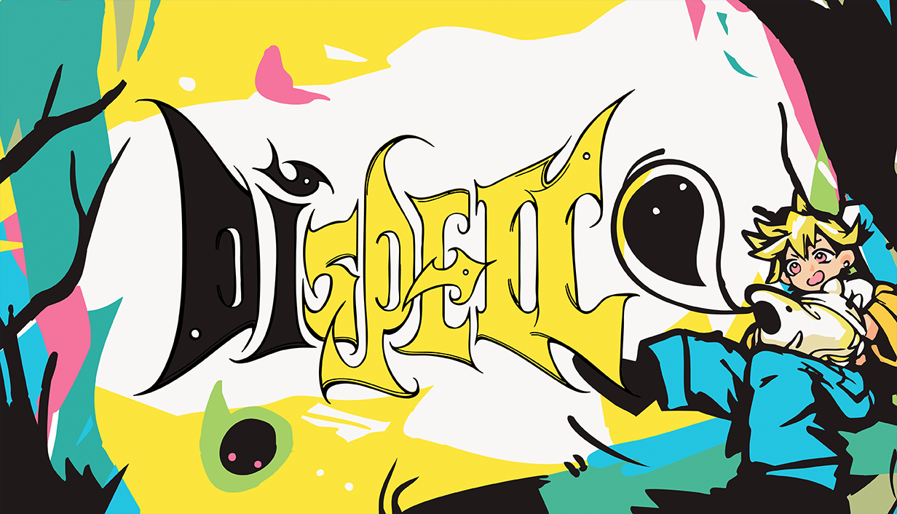
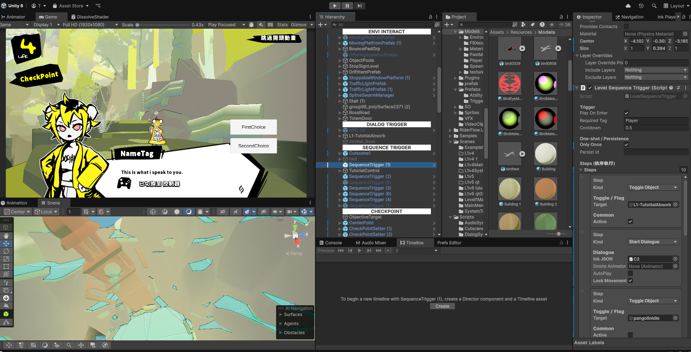
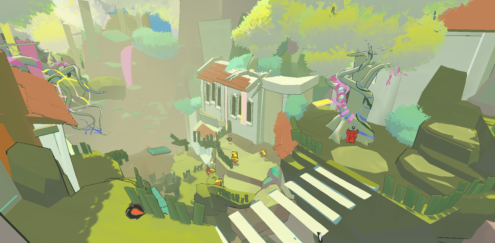
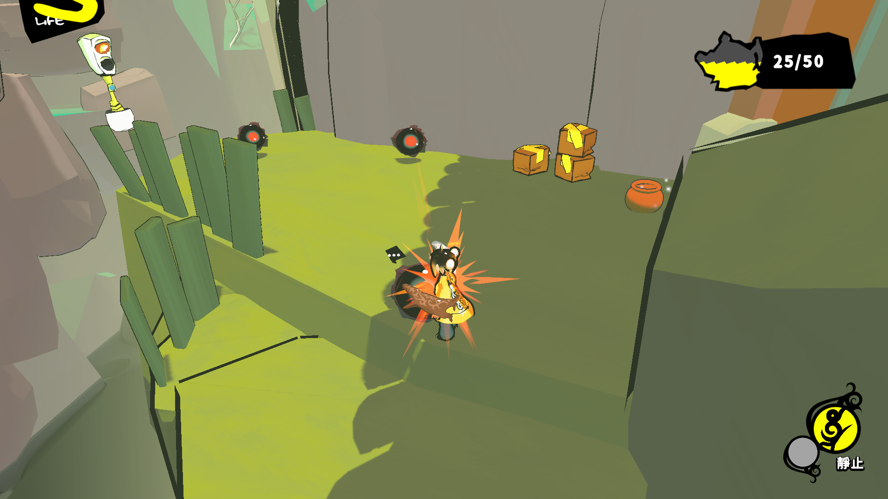
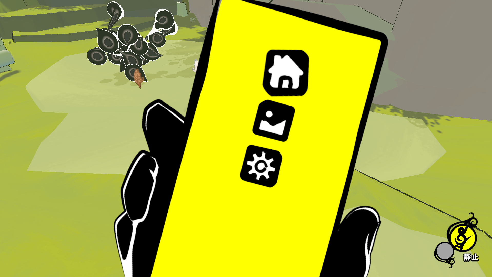
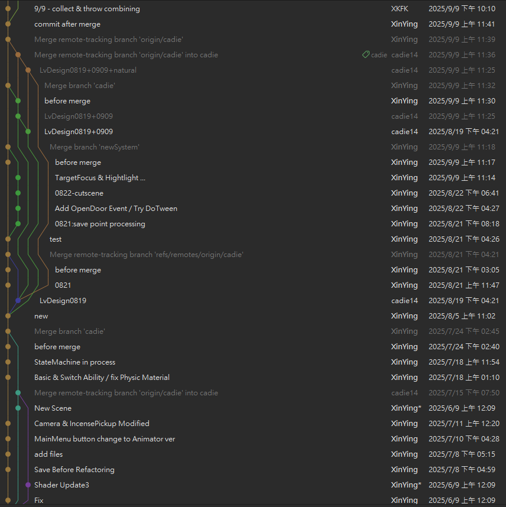
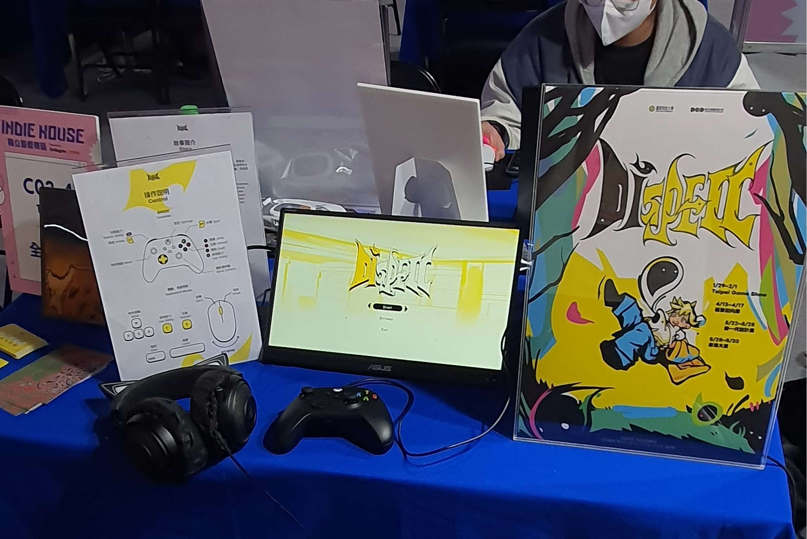
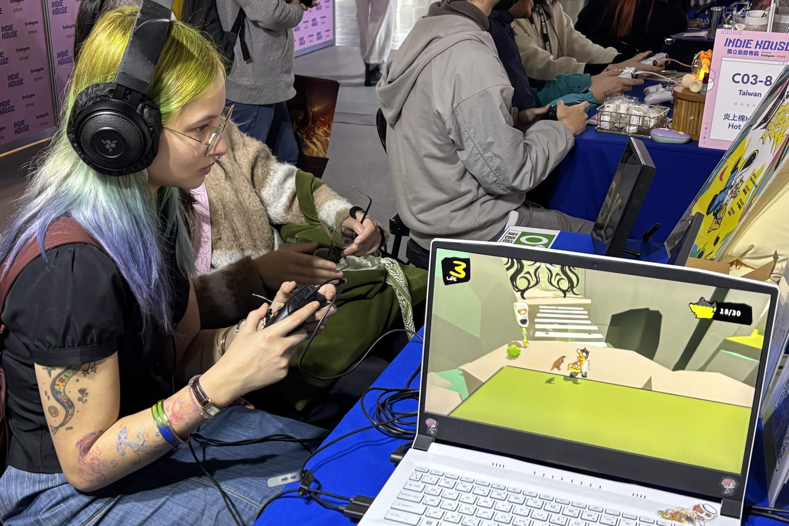

Dispell是一款融合台灣與馬來西亞民間信仰、探討都市化與生態議題的 3D 冒險遊戲。玩家扮演靈媒，在高度都市化的場景中化解「念頭生物」引發的超自然異常，並透過吸收其能力解開環境謎題。
Dispell is a 3D adventure exploring the tension between urban modernization and marginalized life. Inspired by Taiwanese and Malaysian folklore, players act as a medium navigating highly urbanized environments to resolve supernatural anomalies.
在程式開發方面，我負責Dispell全案的程式整合與架構搭建。為了優化開發流程，我嘗試將設計模式導入實務，並為了提高效率，結合之前的開發經驗，設計了各種小工具。雖然開發過程中常遇到腳本間相互耦合的挑戰，但我透過多次代碼重構與架構迭代，在推倒重來的經驗中顯著提升了處理複雜邏輯的能力。
Regarding Programming, I was responsible for the system integration and architecture design of Dispell. To optimize the development workflow, I implemented various design patterns and developed custom tools based on my previous experience to improve efficiency. Despite facing challenges with script coupling, I significantly enhanced my ability to handle complex logic through multiple rounds of code refactoring and architectural iterations.


在美術設計與視覺整合上，我協同主美術共同定義核心視覺，並負責將所有美術資產導入 Unity 引擎。我同時擔任技術美術的角色，針對現有素材進行二次改製並實作粒子特效（VFX），以強化遊戲整體的超自然氛圍。此外，我負責將 UI/UX 設計理念實現在遊戲內，包含選單系統與操作介面的開發。
In terms of Art Design and Integration, I collaborated with the Lead Artist to define the core visual style and managed the import of all art assets into Unity. Serving as the Technical Artist, I modified existing assets and implemented Visual Effects (VFX) to strengthen the game's supernatural atmosphere. Additionally, I translated UI/UX concepts into the engine, developing the menu systems and interactive interfaces.


在團隊領導與溝通協作領域，我擔任畢業製作的專案組長，利用 Discord 進行溝通、工作分配與進度追蹤，確保開發進度能如期完成。為了優化協作流程，我也嘗試使用 Git 多線整合開發，並在遇到衝突時快速執行版本倒回與修復，提升開發容錯率。
For Leadership and Coordination, I served as the Project Lead for our graduation project. I utilized Discord for communication, task allocation, and progress tracking to ensure we met all deadlines. To optimize our workflow, I implemented Git for multi-branch integration, allowing us to quickly perform version rollbacks and resolve conflicts, which greatly improved our development reliability.

在展覽與測試實務方面，本專案曾參與多場公開展覽與測試，其中包括異校大亂鬥、臺北國際電玩展以及多場校内公開測試。開發過程中，團隊透過收集第一線玩家回饋，對遊戲版本進行多次優化與迭代，以確保作品能根據實際測試結果持續完善。
In Exhibitions and Playtesting, this project participated in several public showcases and tests, including Taipei Game Show (TGS), and multiple on-campus playtests. Throughout the development, the team gathered direct player feedback to perform continuous optimizations and iterations, ensuring the game evolved based on real-world testing results.

